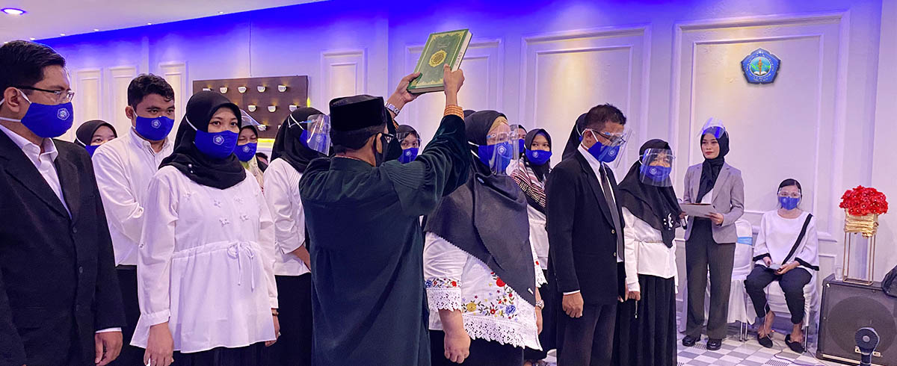

PENGUMUMAN
STIKES Baktara sebagai lembaga pendidikan ikut bertanggungjawab untuk mencerdaskan kehidupan bangsa melalui pendidikan tinggi yang bertujuan untuk melahirkan alumni-alumni yang memiliki kemampuan, kecakapan, dan keterampilan di bidang kesehatan, dan mampu mengembangkan serta menyebarluaskan ilmu pengetahuan, teknologi, dan seni di bidang tersebut sehingga dapat meningkatkan derajat kesehatan keluarga, masyarakat, bangsa dan negara.
PENGUMUMAN
Sekolah Tinggi Ilmu Kesehatan Bakti Nusantara Gorontalo diselenggarakan oleh Yayasan Bakti Nusantara Gorontalo dengan Akta Notaris No. 15 tanggal 5 Juni 2010 dan SK Menkumham RI: AHU-141.AH.01.04 Tahun 2011 berdasarkan Surat Keputusan Izin Penyelenggaraan Pendidikan STIKES BAKTARA Gorontalo, SK Menteri Pendidikan Nasional Republik Indonesia No. 01/E/0/2014 pada tanggal 17 April 2014.
PENGUMUMAN
Tujuan
- Menghasilkan lulusan yang berwawasan global, memiliki kompetensi dalam bidang Rekam medis dan informasi kesehatan serta gizi masyarakat.
- Meningkatkan sarana dan prasarana akademik dan non akademik yang memadai.
- Meningkatkan hasil penelitian, pengabdian kepada masyarakat, dan publikasi ilmiah dosen.
- Menjalin kerjasama dengan berbagai lembaga yang terkait dalam penyelenggara pendidikan, penelitian dan pengabdian kepada masyarakat.
- Meningkatkan penjaminan mutu dalam memberikan pelayanan terbaik bagi segenap civitas akademika dan stakeholders.